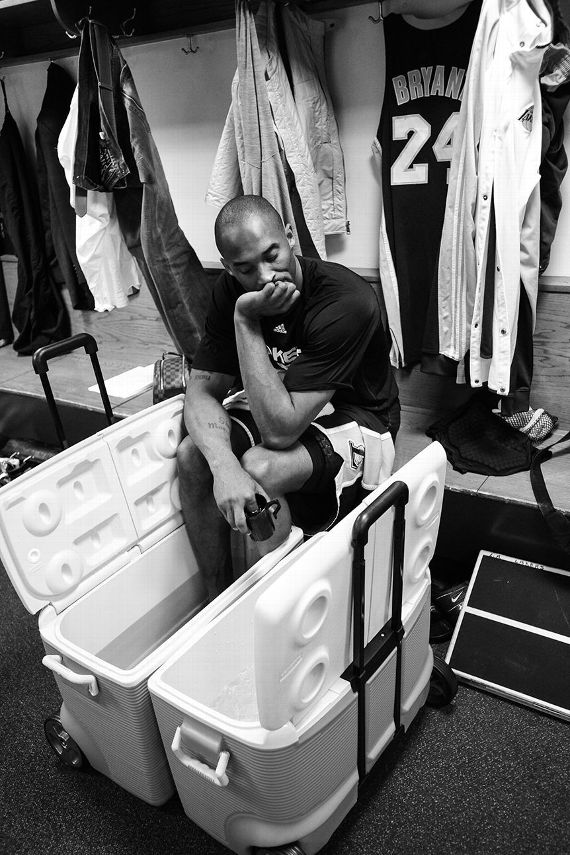
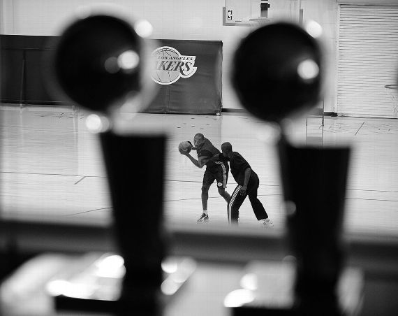
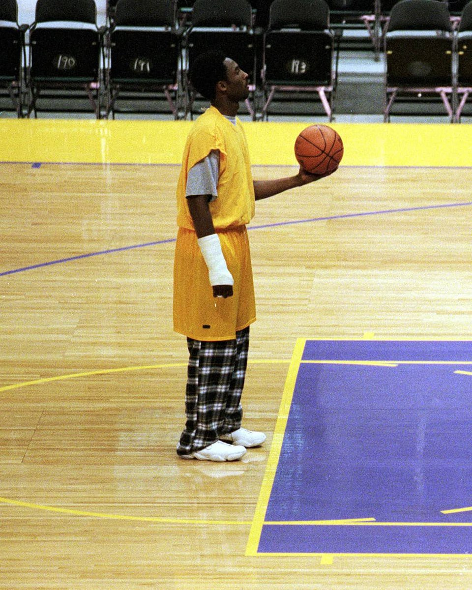
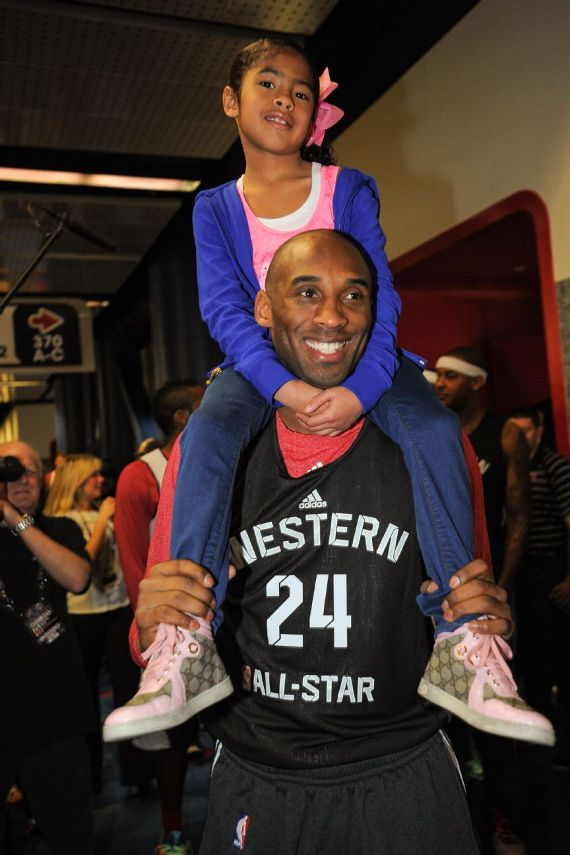

"It’s the one thing you can control. You are responsible for how people remember you—or don’t. So don’t take it lightly."
Kobe about his legacy
Timeline of Kobe's carrer
1978: Born in Philadelphia
1996: Drafted by the Charlotte Hornets then traded to the Lakers
2000: First NBA Title
2008: Won the Most Valuable Player's trophy and the gold medal at the 2008 Summer Olympics
2010: Won his 5th and last NBA title; 2nd time Finals MVP
2012: Won the gold medal at the 2012 Summer Olympics
2016: Played his last game scoring 60 points (20th season)
2020: Died in a helicopter crash along his 2nd daughter Gianna and 7 ohter persons in California
Impactful quotes
"The most important thing is to try and inspire people so that they can be great in whatever they want to do."
"Everything negative – pressure, challenges – is all an opportunity for me to rise."
"Haters are a good problem to have. Nobody hates the good ones. They hate the great ones."
"Pain doesn’t tell you when you ought to stop. Pain is the little voice in your head that tries to hold you back because it knows if you continue you will change."
"I can’t relate to lazy people. We don’t speak the same language. I don’t understand you. I don’t want to understand you."
Gallery
1 / 4

2010 - Game preparation in solitude
2 / 4

2010 - Kobe with assistant coach Graig Hodges an hour and a half after practice.
3 / 4

1999 - Training his left hand wearing pyjama due to a broken right hand.
4 / 4

2013 - Kobe and Gianna at the All-Star open practice.